reduce
CPU中，reduce使用了一种树形计算方法：
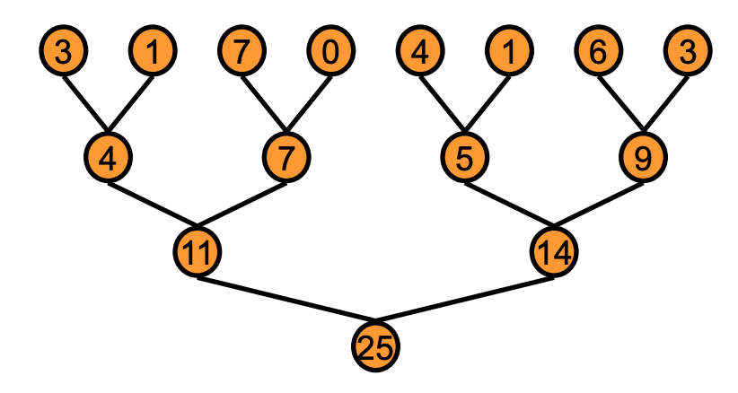
从上至下，将数据不断地累加，直到得出最后的结果，即25
对于非常大的数组，没有一个全局synchronize的操作。
如果有：在每一个block产生结果后，全局同步一下，等到所有blocks都同步了，再继续recursively
为什么没有global synchronize？
为具有高处理器数量的GPU内置硬件成本高昂
会迫使我们运行更少的块，避免死锁。
solution：将reduce分为两个阶段
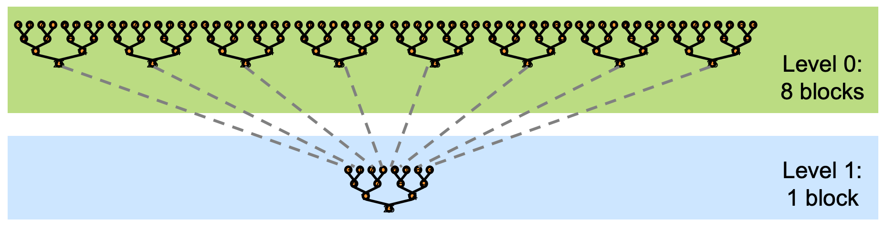
设给定一个长度为N的数组，需要计算该数组的所有元素之和
首先需要将数组分为m个小份。而后，在第一阶段中，开启m 个block计算出m个小份的reduce值。最后，在第二阶段中，使用一个block将m个小份再次进行reduce，得到最终的结果
对于第一个阶段，reduce(T *input, T *output) 其中output就是长度为m的数组，即第一阶段的输出。
GPU 优化目标是努力达到 GPU 峰值性能。需选择合适指标，对于计算受限内核 用 GFLOP/s衡量，内存受限内核 用带宽衡量。归约操作算术强度低，每个加载元素仅 1 次浮点运算，属带宽最优情况，因此应追求峰值带宽。
1 2 3 4 5 6 7 8 9 10 11 12 13 14 15 16 17 18 19 20 21 22 23 24 25 26 27 28 29 30 31 32 33 34 35 36 37 38 39 40 41 42 43 44 45 46 47 48 49 50 51 52 53 54 55 56 57 58 59 60 #include <iostream> #include <cuda_runtime.h> # define blocksize 512 __global__ void reduce0 (float *d_a, float *d_b) { int tid = threadIdx.x; int i = blockIdx.x * blockDim.x + threadIdx.x; __shared__ float sdata[blocksize]; sdata[tid] = d_a[i]; __syncthreads(); for (int s = blocksize / 2 ; s > 0 ; s >>= 1 ){ if (tid < s){ sdata[tid] += sdata[tid + s]; } __syncthreads(); } if (tid == 0 ){ d_b[blockIdx.x] = sdata[0 ]; printf ("blockIdx.x = %d, sdata[0] = %f\n" , blockIdx.x, sdata[0 ]); } } int main () const int N = 32 * 1024 * 1024 ; const int gridsize = (N + blocksize - 1 ) / blocksize; std::cout << "gridsize = " << gridsize << std::endl; float *A = new float [N]; float *B = new float [gridsize]; for (int i = 0 ; i < N; i++){ A[i] = rand () % 10 ; } float *d_a, *d_b; cudaMalloc (&d_a, N * sizeof (float )); cudaMalloc (&d_b, gridsize * sizeof (float )); cudaMemcpy (d_a, A, N * sizeof (float ), cudaMemcpyHostToDevice); reduce0<<<gridsize, blocksize>>>(d_a, d_b); cudaMemcpy (B, d_b, gridsize * sizeof (float ), cudaMemcpyDeviceToHost); cudaFree (d_a); cudaFree (d_b); return 0 ; }
首先对于，其中最重要的一段规约reduce代码
1 2 3 4 5 6 for (int s = blocksize / 2 ; s > 0 ; s >>= 1 ){ if (tid < s){ sdata[tid] += sdata[tid + s]; } __syncthreads(); }
对于blocks中的每个线程，都携带一个tid变量，也就是每个线程都会执行for循环，所以整个blocks里的线程们执行for循环是，会将sdata中的0--blocksize / 2的空间变为：本身 + [本身 + s]索引的值
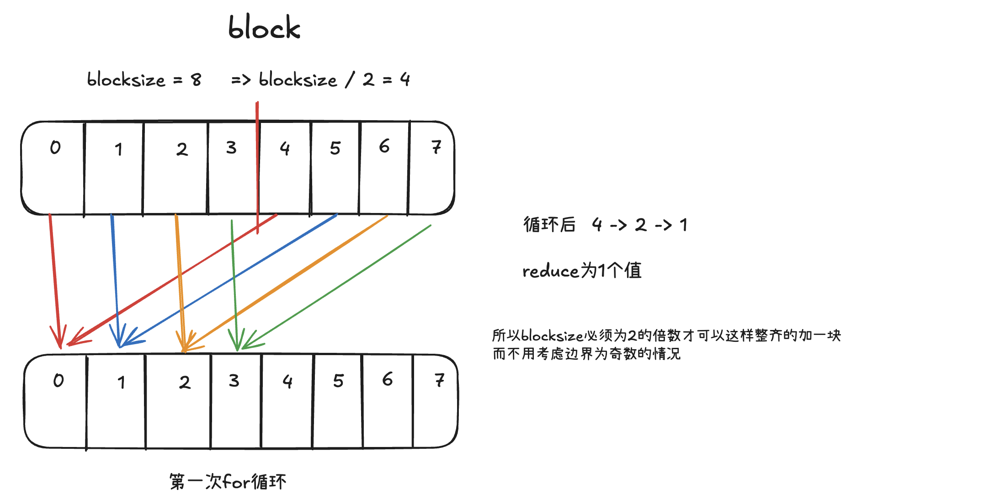
对于数量部分，数组长度为32M长，blocksize = 512， 所以gridsize=65536。
最终产生的结果为blocksize = 512长度。找到原因是因为，在global函数中的最后一句，d_b[blockIdx.x] = sdata[0]; 导致只有blcokIdx的0-511个数据不断覆盖。global函数将一个block中的数据进行reduce，最后只剩下一个数，所以最终的d_b应该是gridsize大小！！
计算cuda函数时间
1 2 3 4 5 6 7 8 9 10 11 12 13 14 15 16 17 18 19 20 cudaEvent_t start, stop; cudaEventCreate (&start);cudaEventCreate (&stop);cudaEventRecord (start, 0 ); reduce0<<<gridsize, blocksize>>>(d_a, d_b); cudaEventRecord (stop, 0 ); cudaEventSynchronize (stop);float elapsedTime;cudaEventElapsedTime (&elapsedTime, start, stop);std::cout << "Time: " << elapsedTime << "ms" << std::endl; size_t total_bytes = N * sizeof (float ) + gridsize * sizeof (float ) + 1 * sizeof (float );float bandwidth = (total_bytes / (elapsedTime * 1e6 )) / 1024 / 1024 ;std::cout << "Bandwidth: " << bandwidth << "GB/s" << std::endl;
回归正题，我使用的规约方法是类似于折半查找的方式，一次规约reduce所需要的时间和带宽是：Time: 0.40608ms、Bandwidth: 0.000315824GB/s
1 2 3 4 5 6 7 for (int s = blocksize / 2 ; s > 0 ; s >>= 1 ){ if (tid < s){ sdata[tid] += sdata[tid + s]; } __syncthreads(); }
教程上使用的另外一种
1 2 3 4 5 6 7 for (unsigned int s=1 ; s<blockDim.x; s*=2 ){ if (tid % (2 *s) == 0 ){ sdata[tid]+=sdata[tid+s]; } __syncthreads(); }
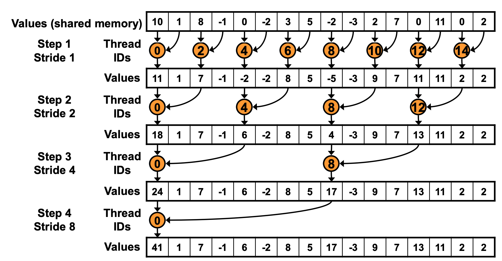
示意图如上；在执行一次循环的代价，两个时间差不多～
第tid号线程将第i号的数据从global中取出，放到shared memory的第tid元素中。比如在第0号block中，0号线程将0号元素取出，放到shared memory的第0号位置
对于GPU来说，需要分配两种资源：存储资源（global memory中申请的32M * sizeof(float) 和shared memory中分配的512 * sizof(float)）和计算资源（一个block中分配512个block，32个thread为一组，绑定在一个SIMD单元，所以512共分配16组SIMD单元） （但实际的硬件资源分配不是这样，因为一个SM的计算资源有限，不可能真的给每一个block都分配这么多的SIMD单元。）
优化1:解决warp divergence（warp发散现象）
第一个阶段，就是tid号线程将i号数据从global memory中取出，再放进shared memory中，严谨一点的话，中间是走一遍寄存器再到shared memory中
1 2 3 4 5 6 7 8 9 10 11 12 13 14 15 16 17 18 19 20 21 __global__ void reduce1 (float *d_a,float *d_b) { __shared__ float sdata[THREAD_PER_BLOCK]; unsigned int i=blockIdx.x*blockDim.x+threadIdx.x; unsigned int tid=threadIdx.x; sdata[tid]=d_a[i]; __syncthreads(); for (unsigned int s = 1 ; s < blockDim.x; s *= 2 ){ int index = 2 * s * tid ; if (index < blockDim.x){ sdata[index] += sdata[index+s]; } __syncthreads(); } if (tid == 0 ) d_b[blockIdx.x] = sdata[tid]; }
假设存在512个线程，共16个wrap。当进行第一次迭代时，0-3号warp的index计算。第二次0、1号warp计算。第三次只有0号warp计算
对于同一个线程束内的线程，在给定的迭代中，tid （线程在块内的索引）是连续的，并且blockDim.x 是线程块内的线程数量。由于index 的计算方式，在同一个线程束内的线程，对于给定的s 值，它们的index 计算结果要么都满足index < blockDim.x ，要么都不满足。
➡️ 例如 tid 是从threadIdx.x 为 0 到 31 。如果根据计算，对于这个线程束内的所有线程，index 都小于blockDim.x ，那么它们都会进入if 分支执行sdata[index] += sdata[index + s]; ；如果index 都大于等于blockDim.x ，则都不会进入if 分支。
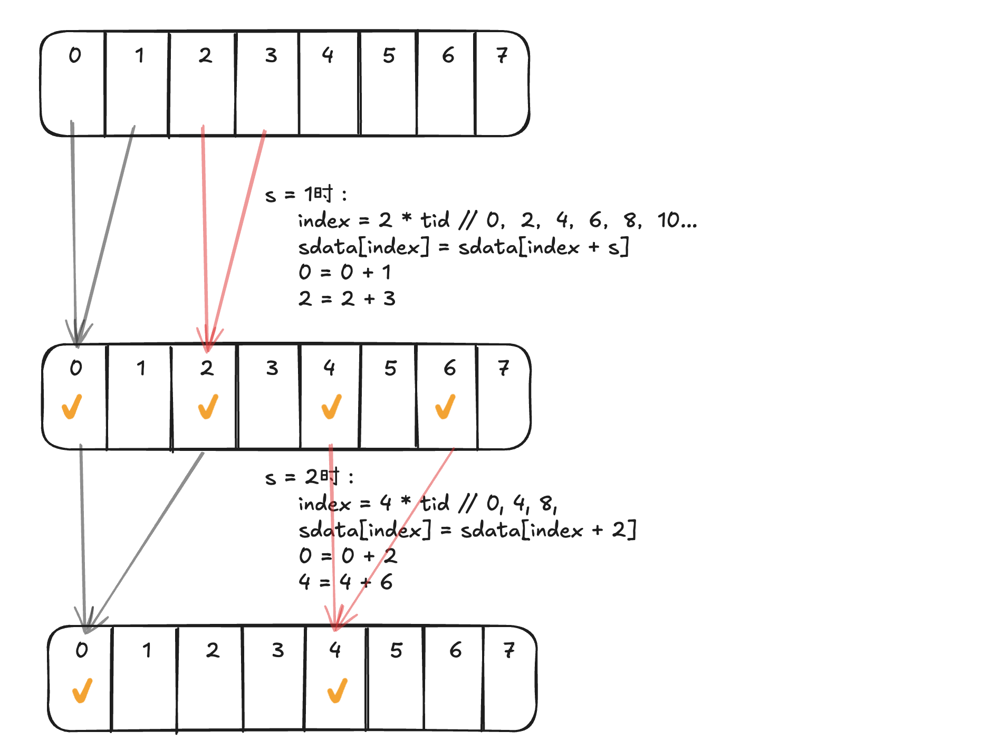
例如，分析这个表格可以看出：
对于前31个也就是一个warp内的线程做分析，可以看出。在s=1-8时，他们的index都是小于blocksize = 512的，也就是说，这个时候都是执行的sdata[index] += sdata[index+s]，同样的判逻辑，直到s=16时 tid=16及之后的线程的index会大于等于512，也就是不再执行这个语句，但这是一种比较理想的情况，因为在前面的多次迭代中，大部分情况下同一个 warp 内的线程执行路径是相同的，减少了线程束发散的概率
基于此分析下之前的情况：
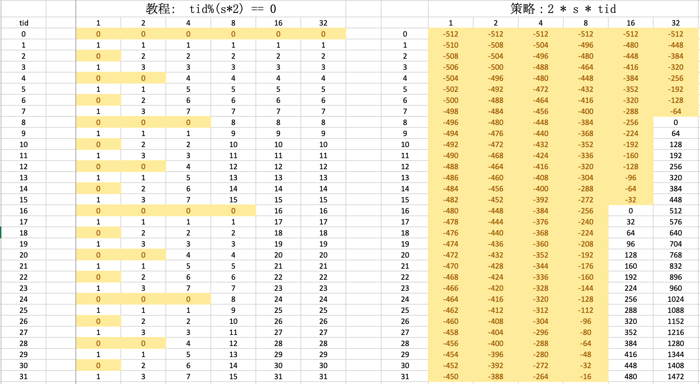
可以看出，按照同一个s来看，在前32个线程中，不断的变换逻辑，导致warp divergence很严重，对于
优化2:解决bank冲突
对于上一个策略，index = 2 * s * tid < 512 ，最大的缺点在于bank冲突，0号warp 中，第一次iteration，0号thread去load shared memory的0号地址以及1号地址 的数，然后写回到0号地址。而此时16号线程，会load 32和33号地址的数，而第一个shared memory 0-31 已经读完，此时的32和1号产生了2路bank冲突。此外，第二次iteration时产生4路冲突。。一直下去8路冲突、16路冲突等等
这点可以理解为 warp的大小是32线程，shared memory也是32个存储体，但是index变化是呈2倍变化（第二轮是4倍，第三轮是8倍。。），也就导致了，第一轮必须访问两个shared memory才满足一个warp。这也就导致了2路bank冲突 ～～
共享内存：
比global、local memory有更高的传输带宽。一般情况，shared memory的带宽是global memory的7-10倍，
容量小，nvidia官方：计算能力1.x的设备中，每一个流多处理器（streaming Multiprocessor）上共享内存为16K（16个存储体），计算能力2.x、3.0及3.5的参数为48k（32个存储体），相邻两块32bit的数据分别属于相邻的两个存储体，存储体每两个时钟周期可以传输32位数据
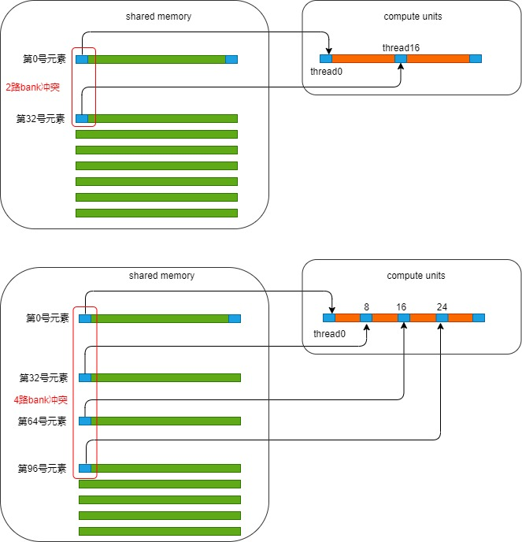
1 2 3 4 5 6 for (unsigned int s = blockDim.x / 2 ; s > 0 ; s >>= 1 ){ if (tid < s){ sdata[tid] += sdata[tid+s]; } __syncthreads(); }
解决bank冲突的方式就是把for循环逆着来~，可以解决bank冲突！！
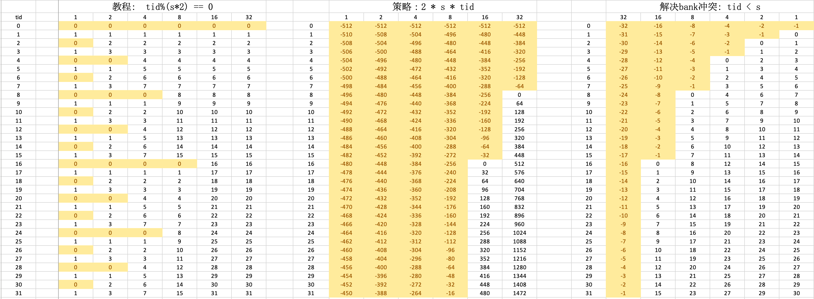
官方教程中也将其叫做Sequential Addressing
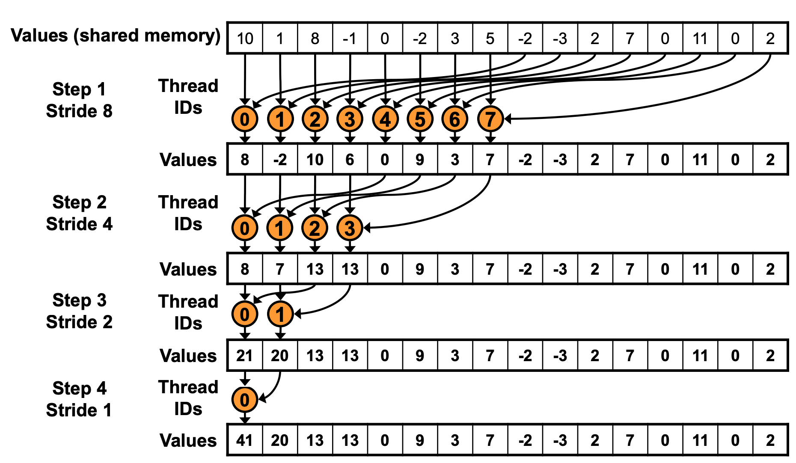
但是这样也就引入了idle进程（空闲进程），可以从图中看到，step 1 只有一半的线程工作，step 2就只有1/4。。。每次干活的线程都会减少一半。
优化3 解决idle线程
为了解决idle问题，可以让那些idle进程出了加载数据到shared memory之外，额外进行一次加法操作
1 2 3 4 5 6 int tid = threadIdx.x;int i = blockIdx.x * (blockDim.x * 2 ) + threadIdx.x;sdata[tid]=d_a[i] + d_a[i+blockDim.x]; __syncthreads();
提前做了一步加法，也就是吧i代表的这一个shared memory所管理的数据，现在管理两倍于他的数据，直接加起来，一个shared memory直接管两倍于原来的内存
SIMD
CUDA 的硬件调度器会以 warp 为单位调度线程。当一个 warp 准备好执行时，硬件调度器会为其分配资源，让 warp 中的所有线程同时执行相同的指令 。这种调度机制利用了 SIMD 的并行性，提升了硬件资源的利用率。
优化4 循环展开（loop unrolling）
当进行到最后几轮迭代时（使用的线程数量<=32时），此时的block中只有warp0 在干活时，线程还在进行同步操作。由于一个warp中的32个线程每次都是执行同一条指令，这天然地保持了同步状态
也就是说不再需要__syncthreads();和if(did < s)
所以对于 s < 32的情况需要换个代码。
1 2 3 4 5 6 7 8 9 10 11 12 13 14 15 16 17 18 19 20 21 22 23 24 25 26 27 28 29 30 31 32 33 34 35 36 37 38 39 40 41 42 43 44 45 46 47 48 49 50 51 52 53 54 55 56 57 58 59 60 61 62 63 64 65 66 67 68 69 70 71 72 73 74 75 76 77 78 79 80 81 82 83 84 85 86 87 88 __device__ void warpReduce (volatile float * sdata, int tid) { sdata[tid] += sdata[tid + 32 ]; sdata[tid] += sdata[tid + 16 ]; sdata[tid] += sdata[tid + 8 ]; sdata[tid] += sdata[tid + 4 ]; sdata[tid] += sdata[tid + 2 ]; sdata[tid] += sdata[tid + 1 ]; } __global__ void reduce4 (float *d_a,float *d_b) { __shared__ float sdata[blocksize]; unsigned int i = blockIdx.x * (blockDim.x * 2 ) + threadIdx.x; unsigned int tid = threadIdx.x; sdata[tid] = d_a[i] + d_a[i + blockDim.x]; __syncthreads(); for (unsigned int s = blockDim.x / 2 ; s > 32 ; s >>= 1 ){ if (tid < s){ sdata[tid] += sdata[tid + s]; } __syncthreads(); } if (tid < 32 ) warpReduce (sdata, tid); if (tid == 0 ) d_b[blockIdx.x] = sdata[tid]; } int main () const int N = 32 * 1024 * 1024 ; const int gridsize = (N + blocksize * 2 - 1 ) / (blocksize * 2 ); float *A = new float [N]; float *B = new float [gridsize]; for (int i = 0 ; i < N; i++){ A[i] = 1.0 ; } float *d_a, *d_b; cudaMalloc (&d_a, N * sizeof (float )); cudaMalloc (&d_b, gridsize * sizeof (float )); cudaMemcpy (d_a, A, N * sizeof (float ), cudaMemcpyHostToDevice); cudaEvent_t start, stop; cudaEventCreate (&start); cudaEventCreate (&stop); cudaEventRecord (start, 0 ); reduce4<<<gridsize, blocksize>>>(d_a, d_b); cudaDeviceSynchronize (); cudaEventRecord (stop, 0 ); cudaEventSynchronize (stop); float elapsedTime; cudaEventElapsedTime (&elapsedTime, start, stop); std::cout << "Time: " << elapsedTime << "ms" << std::endl; cudaError_t err = cudaMemcpy (B, d_b, gridsize * sizeof (float ), cudaMemcpyDeviceToHost); float sum = 0.0 ; for (int i = 0 ; i < gridsize; i++){ std::cout << "B[" << i <<"] = " << B[i] << std::endl; sum += B[i]; } std::cout << "Sum: " << sum / 1024 / 1024 << "M " << std::endl; if (err != cudaSuccess){ std::cout << "Error: " << cudaGetErrorString (err) << std::endl; } cudaFree (d_a); cudaFree (d_b); return 0 ; }
s > 32 和 if(s <= 32) warpReduce(sdata, tid);能节省所有线程束（warp）的无用功，而不仅仅是最后一个线程束。
➡️volatile关键字
内存可见性：并行计算环境下，多个线程可能同时访问和修改共享内存（如这里的sdata数组）。使用volatile可以确保对该变量的每次读取都直接从内存中获取最新值，而不是从缓存中读取旧值，从而保证了不同线程之间内存访问的一致性。
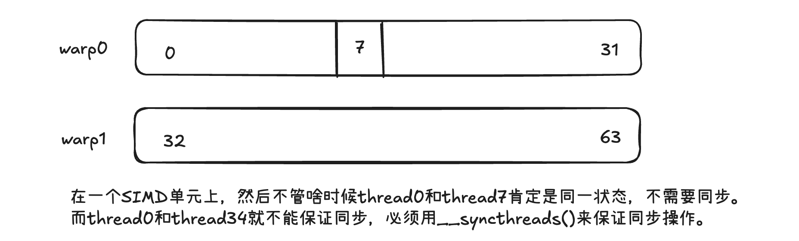
优化5 完全展开
如果已经知道所有循环次数，那就可以完全展开for循环，减少for循环开销
1 2 3 4 5 6 7 8 9 10 11 12 13 14 15 16 17 18 19 20 21 22 23 24 25 26 27 28 29 30 31 32 33 34 35 36 37 38 39 template <unsigned int blockSize>__device__ void warpReduce2 (volatile float * cache,int tid) { if (blockSize >= 64 )cache[tid]+=cache[tid+32 ]; if (blockSize >= 32 )cache[tid]+=cache[tid+16 ]; if (blockSize >= 16 )cache[tid]+=cache[tid+8 ]; if (blockSize >= 8 )cache[tid]+=cache[tid+4 ]; if (blockSize >= 4 )cache[tid]+=cache[tid+2 ]; if (blockSize >= 2 )cache[tid]+=cache[tid+1 ]; } __global__ void reduce5 (float *d_in,float *d_b) { unsigned int i=blockIdx.x*(blockDim.x*2 )+threadIdx.x; unsigned int tid=threadIdx.x; __shared__ float sdata[blocksize]; sdata[tid]=d_in[i] + d_in[i+blockDim.x]; __syncthreads(); if (blocksize>=512 ){ if (tid<256 ){ sdata[tid]+=sdata[tid+256 ]; } __syncthreads(); } if (blocksize>=256 ){ if (tid<128 ){ sdata[tid]+=sdata[tid+128 ]; } __syncthreads(); } if (blocksize>=128 ){ if (tid<64 ){ sdata[tid]+=sdata[tid+64 ]; } __syncthreads(); } if (tid<32 )warpReduce2 <blocksize>(sdata , tid); if (tid==0 )d_b[blockIdx.x]=sdata[tid]; }
Time: 0.275712ms
优化6: 设置合理block
blocksize = 1024: 没有什么提升 Time: 0.28064ms
直接激昂blocksize设置为2048后，会有明显提升Time: 0.133952ms
优化7: 使用shuffle指令
Shuffle指令是一组针对warp的指令。Shuffle指令最重要的特性就是warp内的寄存器可以相互访问 。在没有shuffle指令的时候，各个线程在进行通信时只能通过shared memory来访问彼此的寄存器。而采用了shuffle指令之后，warp内的线程可以直接对其他线程的寄存器进行访存。通过这种方式可以减少访存的延时。除此之外，带来的最大好处就是可编程性提高了，在某些场景下，就不用shared memory了。毕竟，开发者要自己去控制 shared memory还是挺麻烦的一个事。
1 2 3 4 5 6 7 8 9 10 11 12 13 14 15 16 17 18 19 20 21 22 23 24 25 26 27 28 29 30 31 32 33 34 35 36 37 38 39 40 41 42 template <unsigned int blockSize>__device__ __forceinline__ float warpReduceSum (float sum) { if (blockSize >= 32 )sum += __shfl_down_sync(0xffffffff ,sum,16 ); if (blockSize >= 16 )sum += __shfl_down_sync(0xffffffff ,sum,8 ); if (blockSize >= 8 )sum += __shfl_down_sync(0xffffffff ,sum,4 ); if (blockSize >= 4 )sum += __shfl_down_sync(0xffffffff ,sum,2 ); if (blockSize >= 2 )sum += __shfl_down_sync(0xffffffff ,sum,1 ); return sum; } #define WARP_SIZE 32 template <unsigned int blockSize, int NUM_PER_THREAD>__global__ void reduce_Shuffle (float *d_in,float *d_out) { float sum = 0 ; unsigned int tid = threadIdx.x; unsigned int idx = blockIdx.x * (blockSize * NUM_PER_THREAD) + threadIdx.x; for (int i = 0 ; i < NUM_PER_THREAD; i++){ sum += d_in[idx + i * blockSize]; } static __shared__ float warpLevelSums[WARP_SIZE]; const int laneId = threadIdx.x % WARP_SIZE; const int warpId = threadIdx.x / WARP_SIZE; sum = warpReduceSum <blockSize>(sum); if (laneId == 0 ) { warpLevelSums[warpId]=sum; __syncthreads(); } sum = (threadIdx.x < blockDim.x / WARP_SIZE)? warpLevelSums[laneId]:0 ; if (warpId == 0 )sum = warpReduceSum <blockSize/WARP_SIZE>(sum); if (tid==0 )d_out[blockIdx.x]=sum; }
最终结果为16384个2048 总量也为32M，时间Time: 0.442208ms,比较差
下载nsight system
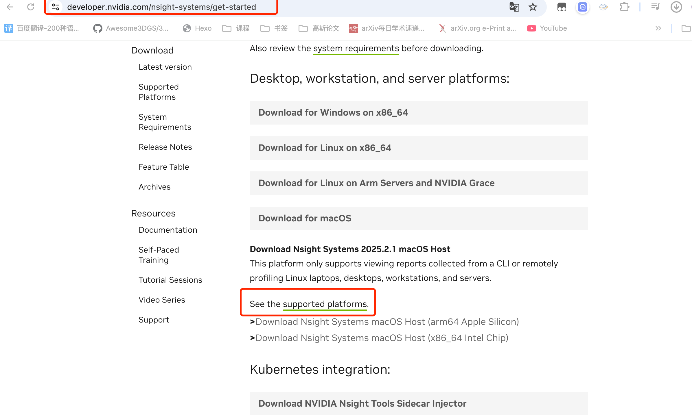
下载macos版本，连接上远程的linux
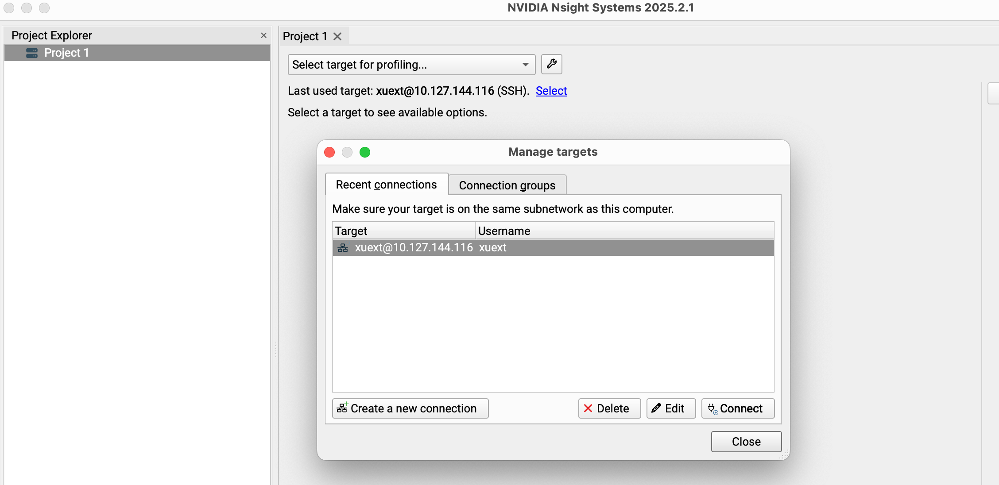
中间遇到了无法使用collect GPU metrics情况(GPU的权限问题):
1 2 3 4 5 6 7 8 cd /etc/modprobe.dsudo touch allowgpu.confvi allowgpu.conf options nvidia NVreg_RestrictProfilingToAdminUsers=0 sudo update-initramfs -u -k all sudo reboot
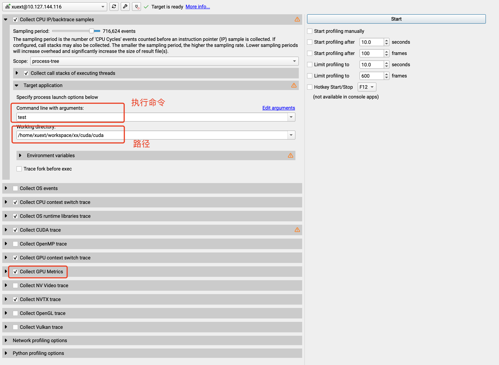

{kind=link}
{kind=link}
{kind=link}
{kind=link}
{kind=link}

{kind=link}
{kind=link}
{kind=link}
{kind=link}
{kind=link}
{kind=link}
{kind=link}
{kind=link}